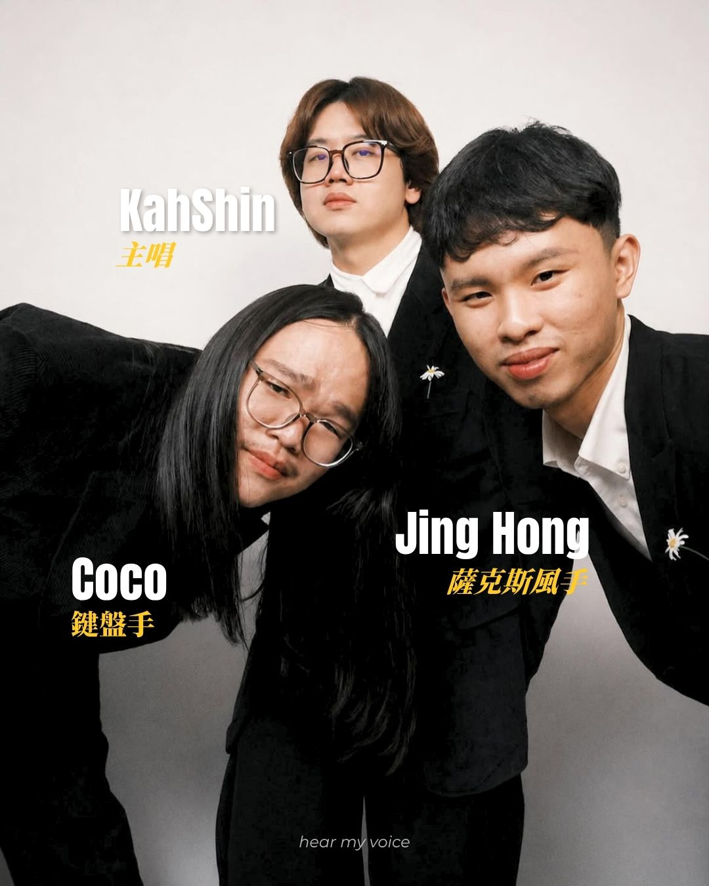

GoodNight Daisy，是以 80 年代的音樂為內核，結合 Dream Pop、Indie、Rock 等元素進行創作的馬來西亞獨立樂團。隨著早期創作的<Sweet Memories>、<Fishes Dream>等逐漸進入大眾視野，樂團發展也在新團員的加入後趨向穩定。
團名 Daisy 的原型並非雛菊，而是雜草叢中長出的大花咸豐草。鍵盤手 Coco 喜愛其不惹眼但也生得漂亮的特質，故引作團名。在和主唱 KahShin 商討團名時，受落日飛車、babychair、deca joins 等團名啓發，便想著再加入一個名詞作為搭配，多番嘗試後便得出現在的團名。GoodNight 也與當時即將發行的專輯調性不謀而合，既有著與親友互道晚安的溫柔，亦有晚安曲細語哄睡的浪漫，頗具夢幻色彩。

GoodNight Daisy 的三位成員在成團前已是摯友，鍵盤手 Coco 是主唱 KahShin 的大專學長。兩人因故友相識，怎料在音樂審美上一拍即合，第一次見面便從當天下午一直聊到隔日凌晨，就此結下緣分。Coco 和薩克斯風手 Jing Hong 則為中學好友，二人相識於學校的管樂團。Jing Hong 早期也曾以樂手身分參與專輯製作，直至 2025 年年初，才正式成為 GoodNight Daisy 的一員。
成團契機
KahShin 與 Coco 二人早前原無意組團。彼時 KahShin 剛從大專畢業，面對初出社會的迷茫，以及現實與夢想之間的落差，便寫下了<Fishes Dream>，僅上架至 YouTube，也未曾考慮正式發行。而後創作<Sweet Memories>時於副歌處卡關，向昔日摯友 Coco 求助，二人也得以有了共同創作的契機。
KahShin：那個時候 Coco 就有跟我說「或許可以試著把它做出一張專輯看看」，但我相信在那個時候他是開玩笑的。
Coco：在那個當下說要做專輯肯定是隨口一說的，而且那個時候 KahShin 才剛畢業正要開始找工作，準備步入人生的下個階段，我也不敢真的拉著他陪我玩音樂。但畢竟我們在音樂上很投緣，所以自然也希望可以有更多的合作。
看到他真的開始按部就班地工作的時候，我當時就覺得他應該是一隻逃走的魚了。沒想到他後來沒上幾天班就說想要回來全職做音樂，那個破釜沉舟的決心蠻震撼到我的，我們就這樣一直做了到現在。
而薩克斯風手 Jing Hong 雖為古典背景出身，但學習音樂的初衷其實是為了接觸流行樂。雖然獨立樂團與古典樂團演繹方式有別，但此前以樂手身份參與錄製的體驗總會給 Jing Hong 帶來許多新奇發現。後來次數見長，便索性也直接加入了樂團。
Q：目前大部分作品都是由 KahShin 擔任主要詞曲創作，通常一首歌是怎麼完成的？
Coco：通常是 KahShin 做了七、八十趴我才接手的，一般是徵求一些意見，問我這首歌可以怎麼繼續完善或者讓我開始配一些旋律和和聲。在製作上有時候我也會有我的堅持，但最後的決定權還是在 KahShin 手上。
當然我會盡力地去說服他，如果他能接受我提供的方案就會繼續溝通，畢竟也沒有人喜歡吵架嘛。但我覺得在這個環節最需要的就是「說實話」，所以會把我所觀察到的都跟他說，讓他自己去定奪。而我更像是一個負責把關的角色，盡量去挑出一些可以改進的地方，來提升整首歌的質感。
Jing Hong：我自己是古典出身，所以也不太熟悉編曲這類的事物。大多數是根據經驗判斷哪個部分還可以再加點什麼，哪裡好聽，哪裡不好聽。混音的時候也會幫忙給出意見，看看各個樂器之間聽感是否平衡。
Q：有沒有想過嘗試其他的分工方式呢？
Coco：其實之前也嘗試過其他的合作方式，比如說可能先讓 KahShin 完成 50% 的製作，但那一次就不太順利。可是也在那一次之後，讓我瞭解到彼此之間創作習性的不同。
KahShin：我們的主要的分歧點在於我不想輕易放棄任何一個旋律，所以即便寫得再累，我也會想要一直不斷修繕它，至少讓 DEMO 先套上編曲之後再說。如果成品編曲和詞曲不搭，便會依照編曲重新創作。但 Coco 則是碰到覺得寫不下去了，就會想要推翻重來的那一類型。可即便如此，我還是覺得當初寫的那首歌，放到現在依然很好聽（笑）。

＊ Jamming 指的是音樂人們聚在一起，沒有事先排練或固定樂譜，憑感覺和默契進行即興演奏或合奏。
Q：其他團員未來有沒有想要參與詞曲創作的部分呢？
Jing Hong：我覺得我不是很擅長去做發想，因爲一般我只會想「這一段我要怎麼演奏」，而不是「我要創造什麼樣的旋律」。但目前還在學習中，如果想得出來的話就會想出來的，隨緣吧。人家是一年寫十首歌，我十年磨一劍，我就寫一首歌（笑）。
Coco：因為我是基督徒，如果要我寫的話，我會想要為了我的信仰而創作。我鬍子一直留著沒剃，也是我和我自己的約定。我要等我寫好歌之後才剃掉它，也算是間接逼迫自己寫吧（笑）。但我自認我的創作靈感不是很多，所以坦白說也還好。
KahShin：大家寫歌的方式不太一樣，有的人需要到大自然裡、有的人會選擇泡在工作室五、六小時不停地寫、有的人是洗澡的時候，所以他們水費很貴（笑）。我有時候也會在洗澡或者快睡著的時候想到旋律，但我覺得最重要的是要保持日常的習慣，持續地寫。可能每天花個一、兩小時，即便沒有熱情也要持續地去做。
Q：在創作過程中或在音樂這條路上有沒有受到其他音樂人的影響或啟發呢？
KahShin：我覺得我被 80 年代的作品影響蠻多的，Prince 是其中一個。還有韓國的音樂，比如說 JANNABI，是 Coco 推薦給我的。我覺得他們的音樂有種魔法，很治愈。
TOTO 也是我們最近喜歡上的一個美國樂隊，他們的作品對《愛源 - Primitive Love》的影響蠻大的，Satellite 就是其中一個例子。如果你仔細去聽他們的音調、他們玩的東西、音樂的結構，就會知道為什麼我會做出這樣的音樂。
第一次和 Coco 徹夜長談也給了我很多啟發，他介紹了我很多臺灣的樂團，比如美秀集團、deca joins、老王樂隊等。還給我聽了落日飛車的<我是一隻魚>，那個當下真的有啟發到我，原來音樂還可以這樣做。
Q：GoodNight Daisy下一個階段的目標想做什麼？
KahShin：繼續做新專輯吧……但我們也很想要有更多的表演機會。我們最終目標想的是要到國外演出，參加臺灣或者中國的音樂祭。
Coco：臺北小巨蛋（笑）。
KahShin：那個太大了啦，但目前最大的希望就是可以到海外演出。
Q：在成團這些日子，目前有什麼你們覺得很有趣/很難忘的事嗎？
KahShin：我們在後臺打架（笑），開玩笑的。
Jing Hong：練完琴打 PS5 也蠻好玩的（笑）。我覺得是每次製作的時候。我錄音基本上都是沒什麼準備的。就是會先這樣聊聊天，然後隨便吹一吹，試著試著就有旋律出來了，我覺得蠻開心的。我們都是以很輕鬆歡樂的方式去做音樂的，可以丟一些很天馬行空的想法出來，或者吹一些很鬧的旋律，把它放進我們的音樂裡。
Coco：我覺得我們可能跟別人不太一樣的是，聚在一起做音樂這件事是建立在友誼之上的。肯定會有意見不合的時候，但我們都很珍惜彼此之間的友情。
KahShin：我覺得在家人的支持上我們也蠻幸運的，我們的家人都是全權放手讓我們能好好地去做音樂。
Coco：對！我們的家人都是 100% 支持我們做音樂的。不會說要我們一畢業就要找個安穩的工作賺錢，反而是希望我們可以去發揮自己的才能。所以在這方面算是不太有什麼壓力的，至少不需要闖出什麼名堂來得到家人的認可。
能不能各自推薦一首最近在聽的歌或是很喜歡的歌
KahShin | Let's Go Crazy - Prince and the Revolution
Coco：為什麼？你洗澡的時候很瘋狂嗎？
KahShin：所以我水費很貴，我要在泳池裡洗澡（笑）。
Coco | 陳嫺靜
Coco：我最近很喜歡聽這種曲風。
Jing Hong | 芒果醬 - 團長
Jing Hong：最近對臺語歌很有興趣，聽了很多比如說芒果醬的<團長>、<九萬十八拐>還有黃奇斌的新專。我覺得臺語跟華語相比有給我一些不太一樣的感覺。
<結>
關注 GoodNight Daisy 有一段時間了，很喜歡他們用一些很復古的音色來玩弄旋律敘事，比如《愛源 - Primitive Love》的 intro <Enemy is coming>。從原始的非洲鼓開始，原先鋪墊的貝斯逐漸過渡到的電吉他，鳥叫聲和電子雜訊穿插其中。架子鼓取代原先的鼓點後，編曲開始往上走。像是人類歷經時間長河千百年來的淘洗，經過獵捕、戰爭、逃亡，最後安紮在現代都市，畫面感很強烈。
有幸可以和耳機裡的音樂人面對面暢聊心路歷程，親身為那些陪伴過我一些時日的旋律溯源，對我來說是個難能可貴的經驗。希望三位能走進更多人的耳機，如願站上更大的舞臺！